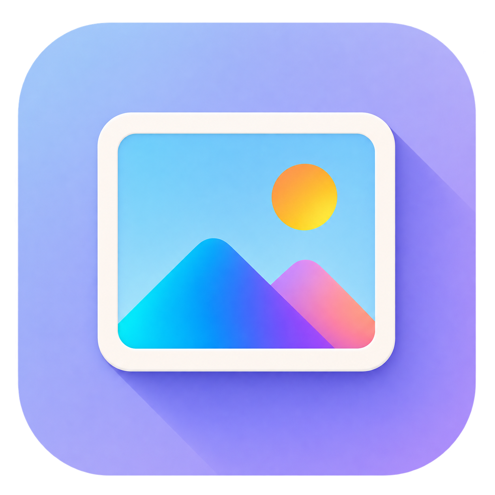

<!doctype html><html lang="zh-CN"><meta charset="utf-8"><meta name="viewport" content="width=device-width,initial-scale=1"><title>LumaCraft · 光影画框 V2</title><style>body{margin:0;background:#f2f0f7;color:#363446;font:14px/1.7 "Segoe UI","Microsoft YaHei",sans-serif;padding:32px}main{max-width:1000px;margin:auto}h1{font-weight:500;font-size:23px}p{color:#787487}.preview{display:flex;gap:30px;align-items:center;flex-wrap:wrap}.hero{width:min(65vw,570px);max-width:100%;height:auto}.sizes{display:flex;gap:20px;align-items:center;padding:26px;background:#e6e1f0;border-radius:16px}.sizes img{object-fit:contain}.note{font-size:12px}</style><main><h1>光影画框 · V2</h1><p>完整圆角画框 · 明亮紫蓝背景 · 渐变山形 · 右下长阴影</p><div class="preview"><div><div class="sizes"></div><p class="note">96 / 48 / 24 px 实际缩小预览</p></div></div><p class="note">当前供配色与造型确认，透明外边缘待精修。</p></main></html>
